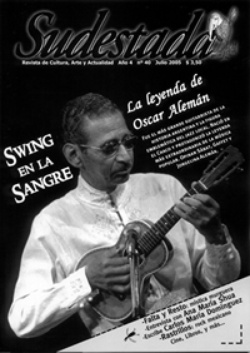

Buscar
Oscar Alemán: Retazos de una leyenda
De una infancia pobre en el Chaco a ser el showman número uo de la noche parisina de los años treinta. De una vida familiar trágica al éxito y el reconocimiento de monstruos como Duke Ellington, Django Reinhardt y Louis Armstrong. De bailar en la calle por unas monedas a transformarse en el mejor guitarrista argentino de todos los tiempos. De llenar estadios y convocar multitudes a la indiferencia y el olvido en Buenos Aires. Retazos de una vida singular, la vida del músico que quedo en la historia como interprete, pero también como pionero del jazz en un país de tangueros.
Edición N° 40
Julio 2005
Revista bimensual
Comprar edición impresaSumario
- Oscar Alemán: Retazos de una leyenda
- Última Etapa
- La ciencia también es una lírica
- Falta y Resto: La murga viene marchando...
- Ana María Shua: "Mi ideal es perturbar"
- Rastrillos: La revolución Musical
Compartir Articulo
Buenos Aires, Argentina, 1968.
Los nervios no lo traicionaron hasta que puso un pie en el improvisado escenario. Desde allí, mirando de arriba el bullicio de los invitados, las risas y las bromas de esa multitud de perfectos desconocidos, empezó a sentir que las piernas le temblaban. Sabía cómo era esa sensación, la conocía casi de memoria. Sabía también cómo detener esa guerra de nervios que lo iba carcomiendo por dentro. Miró a sus costados y buscó el cavaquinho. Se fue acercando lentamente al micrófono, como intentando no llamar la atención de los concurrentes, que parecían dispuestos a no escuchar nada que no fueran gritos y carcajadas. El tipo deslizó sus dedos sobre las cuerdas y se acomodó los anteojos, mientras sentía como los nervios iban, poco a poco, abandonando sus piernas. Hizo una pausa antes de comenzar y los primeros acordes extirparon definitivamente las tensiones acumuladas antes de llegar al escenario.
Abajo, la cosa seguía más o menos igual. Nadie le prestaba atención a aquel hombrecito moreno, que abrazado a su diminuto instrumento, disparaba una melodía pegadiza, repleta de swing. El bullicio siguió un rato más, sólo hasta que una voz afónica e imponente exigió silencio desde abajo, en inglés. Era la voz de un tal Duke Ellington, que no dudó en pegar dos gritos para acallar el coro de obsecuentes y oportunistas que lo rodeaban en la recepción de la embajada.
El que se había ganado su respeto desde arriba del escenario se llamaba Oscar Alemán, y ya se conocían. El resto de los presentes acató la orden del homenajeado Ellington, y comenzó a mirar con curiosidad al señor morocho que seguía, cada vez más suelto, cada vez más seguro, rasgando las cuerdas de un cavaquinho. Sólo entonces, rodeado de un silencio que no esperaba, Oscar Alemán recordó como una ráfaga imágenes de los últimos años. Conocía aquella pieza de memoria, más que eso, cada nervio de su cuerpo parecía dispuesto para tocar esa canción y hacerlo de esa forma. Entonces, mirando de arriba a esa multitud de gente importante, vestidos con ropas elegantes y hablando en otro idioma, recordó esas navidades con mate y tortas fritas, esas clases de guitarra con las que se había ganado la vida los últimos tiempos. Justo él, que jamás había leído una partitura y que desconocía los códigos de la métrica. Justo él, que jamás había tenido un profesor y que había sido abandonado a su suerte después de llenar estadios y de hacer bailar a multitudes en fiestas populares de todo el país.
Sentía orgullo de observar el entusiasmo con el que Duke Ellington festejaba cada uno de sus acordes sobre el cavaquinho, y cómo el resto lo miraba, tratando de saber quién era ese tipo por el que había que guardar un silencio respetuoso.
Cuando terminó su pieza, las lágrimas se asomaron por detrás de sus anteojos, pero no por los aplausos. La mayoría de aquellos que aplaudían lo hacían por conveniencia. Lloraba cuando escuchó que fue el propio Duke Ellington quien informó a los concurrentes quién era ese morocho que la rompía con el cavaquinho: "Ladies and gentleman, this is Oscar Alemán. This cat has root ('Este gato tiene raíces')", vociferó.
Oscar Alemán agradeció el elogio, y se bajó del escenario donde lo esperaban los saludos de aquellos mismos que lo miraban con indiferencia cuando recién comenzaba su faena. Pero algo detuvo la marcha de Alemán rumbo a la reunión y a los saludos del propio Ellington. Alemán volvió sobre sus pasos, y murmuró casi en voz baja: "Me olvidé el cavaquinho ahí arriba".
Santos, Brasil, 1922.
Hasta el más apurado de los estibadores frenó su andar durante algunos minutos para no perder detalle de aquel negrito que repartía sonrisas en la vereda comercial de la ciudad. El negrito danzaba en la vereda, con la melodía prestada de un yoro interpretado por un guitarrista callejero en esa misma esquina. El negrito bailaba y se contoneaba, todo sonrisa, todo simpatía, y una multitud detenía el tránsito de la vereda para mirar aquella danza increíble, aquel negrito artista.
La mayoría de los transeúntes ya lo conocía. Era Oscarzinho, el mismo que le lustraba los zapatos a los trabajadores del puerto por la mañana. El mismo Oscarzinho que se ganaba sus monedas abriendo las puertas de los coches en la zona más fina de la ciudad. Todos allí conocían de las virtudes de ese negrito incansable, que pronunciaba mal el portugués, que corría por las calles de Santos a las zancadas y que paraba algunas horas, por la noche, para dormir bajo el refugio de los bancos en la plaza.
Cuando Oscarzinho terminaba su faena, estallaban los aplausos. Hasta el más humilde de sus espectadores ocasionales escarbaba en sus bolsillos en busca de esa moneda que pagara la sonrisa matutina, el esfuerzo del negrito que parecía dispuesto a impedirles a todos llegar temprano a sus trabajos.
Pero los transeúntes, que ya se dispersaban, no sabían todo de Oscarzinho. No sabían qué hacía Oscarzinho con aquellas monedas que guardaba en un sobre celosamente oculto en su pantalón. No sabían, acaso porque el tiempo los apremiaba y los patrones no miraban con buenos ojos a los que llegaban tarde, que Oscarzinho se corría un pique de un par de cuadras hasta el negocio de Marcio, el luthier de la ciudad. Allí Oscarzinho entregaba el puñado de monedas que había juntado ese día, que se sumaban a todas las monedas que ya engordaban el paquete que Marcio guardaba detrás del mostrador con el nombre de aquel negrito escrito en manuscrita algunos meses atrás. "Quiero que me haga el mejor cavaquinho", había exigido el danzarín callejero, doce años, todo entusiasmo y 25 centavos en la mano. Marcio entonces sonrió y le prometió que cuando juntara los 200 pesos necesarios, él le entregaría el mejor cavaquinho de Brasil. Todos los días irrumpía en su negocio un agitado Oscarzinho con su puntual cuota de monedas para meter en el paquete con su nombre, con su sueño. Con el tiempo y a fuerza de tantas visitas, Oscar fue ganándose la amistad de la mujer de Marcio, quien le ofrecía tomarse un café con leche en el negocio, mientras empezaba a rasgar las primeras cuerdas del cavaquinho de la vidriera que amablemente le prestaban para que practicara.
Uno de esos días, Oscarzinho corrió más que nunca con la felicidad de haber recaudado dos pesos, después de un par de días sin haber podido juntar nada para su cavaquinho. Pero algo desmoronó el sueño de aquel negrito. En la vidriera del negocio cerrado, un cartel anunciaba la fatalidad: "Cerrado por duelo". Oscarzinho tocó el timbre y la mujer de Marcio salió entre lágrimas, y entre lágrimas lo abrazó y le contó que Marcio había muerto esa mañana. Ella fue quien le confesó al oído cuáles habían sido las últimas palabras de su marido: "Que a Oscarzinho no se le cobre ni un centavo más, está todo pago". Cuando entraron al negocio, la señora le entregó el cavaquinho que Marcio había armado para él, por el que tanto había trabajado desde hacía meses. Una sonrisa descarada se filtró entre la tristeza del rostro de aquel morochito que temblaba, de pie y con un cavaquinho flamante en sus manos flacas.
Nadie podía explicarse en Santos porqué Oscarzinho lloraba y se reía esa tarde, abrazado a su instrumento. Nadie conocía demasiado, a decir verdad, de la trágica vida de aquel danzarín moreno. Tampoco sabían los transeúntes de dónde venía Oscarzinho, y casi ninguno había oído nombrar en toda su vida el nombre de aquella misteriosa ciudad chaqueña, de nombre Resistencia. ¿Conocían, los vecinos de Santos, de las mañanas calurosas en el Chaco, del paisaje verde interminable, del silencio de la siesta y el bullicio de los grillos al atardecer, del cansado regreso de los hacheros a la ciudad y de las riñas nocturnas que azuzaba el alcohol en las cantinas? Nada, nada conocían. Ignoraban, en realidad, casi todo de aquella geografía que les resultaba tan ajena como aquella otra historia de amor que brotó de sus entrañas algunos años atrás.
La historia de Marcela y la de Jorge. Ella, de familia toba y profesión pianista. Él, uruguayo, descendiente de españoles (de allí su doble apellido: Alemán Moreira), y guitarrista folklórico. Los dos silenciosos, sin poder mirarse a los ojos, capaces de derrotar la timidez sólo para enamorarse. Marcela y Jorge vivieron juntos el tiempo suficiente como para tener seis hijos, y enseñarles a los mayores algunos de los secretos de la guitarra y de la danza folklórica. Toda la numerosa familia conformaba el famoso "Sexteto Moreira", que no se perdía festejo ni peña en Resistencia y que hasta llegó a presentarse en Buenos Aires, en el viejo Luna Park y en el Parque Japonés. Mientras Jorge y Marcela tocaban acompañados por Carlos y Jorgelina, el público ovacionaba a los dos más chicos, que bailaban en el medio de la pista. Pero si había uno que sobresalía a los ojos de la gente, ése era Oscar. Hasta campeonatos de malambo llegó a ganar cuando no llegaba todavía a los diez años.
Pero la vida se les hizo complicada a los Alemán y las presentaciones ya no alcanzaron para alimentar a tan numerosa descendencia. Así que Jorge organizó una excursión a Brasil con sus cuatro hijos mayores con el objetivo de presentar su espectáculo en esa región y, a la vez, arriesgar con una carga de algodón que podía dejar buenos dividendos para la familia. En Buenos Aires y doblada de tristeza, se quedó Marcela con los dos más chiquitos: Herminia y Enrique.
En Brasil la cosa no fue nada sencilla: pocos teatros se interesaron por el espectáculo del "Sexteto Moreira", algunos ni siquiera pagaron lo acordado, y el negocio del algodón fracasó. Era la mala que había llegado para quedarse, suspiraba Jorge, preocupado y lejos de su gran amor. Ese gran amor que los mantenía unidos a la distancia, esa luz que un día, de golpe, se apagó. La noticia, breve y fatal, desmoronó a la familia: Marcela había muerto en Buenos Aires, y sus dos chiquitos habían sido internados en un orfanato. Desesperado y solo con sus hijos, Jorge se derrumbó. 1921 recién caminaba sus primeros pasos cuando el padre de Oscar, derrotado de tristeza, se arrojó al vacío desde el tranvía que cruzaba un puente. Poco antes, ya se habían marchado sus hermanos, cada uno a intentar rebuscárselas por su lado.
Y una tarde gris, Oscar, con once años y sin saber para dónde agarrar, se quedó solo.
París, Francia, 1934.
"Esto no me gusta", rezongó el morocho, vaciando de un trago el vaso de whisky, harto ya de tanto aburrido musette y de tantos comentarios estúpidos de sus excitados acompañantes. Cansado y bufando como un chico, el morocho en cuestión comenzó a buscar con la vista la puerta de salida del L'Ange Rouge, mientras improvisaba alguna excusa que nadie terminó por creerle demasiado. Casi al mismo tiempo en que el morocho, al que todos llamaban Satchmo, agarró el brazo del traductor para tomar impulso rumbo al frío de la rue Fontaine, desde el escenario un locutor delató su presencia al resto de la multitud: "¡Tenemos en la sala al famosísimo astro norteamericano, el señor Louis Armstrong!". Todos los concurrentes ovacionaron la delación, mientras buscaban entre las mesas del fondo al músico más famoso del momento, de visita por París en esos días. Al pobre Satchmo, acostumbrado a las muestras de cordialidad, no le quedó otra que saludar con la mano, esbozar su mejor sonrisa y sentarse otra vez en la mesa, insultándose en voz baja por haberse dejado convencer por su traductor.
Minutos después, a Satchmo le ofrecían otra mano para estrechar en esa noche que parecía interminable. Pero esta vez no se trataba de un francés adinerado, ni tampoco de un fanático cargoso, esta vez era un par, y además era un negro. Su traductor fue quien le informó el nombre del recién llegado: "Es Oscar Alemán, guitarrista de jazz". Los ojos enrojecidos de Armstrong se encendieron de entusiasmo: "¿De jazz? ¿Y por qué no nos arrima alguna melodía, porque esto se está poniendo insoportable, mi amigo?". El vozarrón del ilustre invitado sacudió el cabaret parisino, y no hubo oreja que no detectara el sarcasmo de aquel comentario. El mismo locutor que había delatado la presencia de Armstrong, sugirió al micrófono que Alemán los beneficiara con alguna pieza. El otro morocho, bajito y flaco, de cuidado bigote y sonrisa amplia, gambeteó el cansancio que acumulaba de su última presentación en el Chantilly: era Louis Armstrong, nada menos, quien le rogaba su ayuda.
Como para ir sacando los dedos del frío de la noche, Alemán deslizó sobre su guitarra, casi sin proponérselo, los primeros acordes de "Hombre mío", el tema que había compuesto para Josephine Baker y que ella misma había titulado. Antes del segundo coro, Armstrong ya estaba de pie, aplaudiendo el swing del tipo aquel que había llegado para salvarlo. Para cuando Alemán terminó, Armstrong ya no aplaudía: ahora corría rumbo al escenario esquivando aplausos y comentarios en un idioma que no comprendía. Cuando Oscar retomó la melodía, Satchmo sacó de su bolsillo un pañuelo con un tesoro oculto: la embocadura de su trompeta. Así, imitando los movimientos rítmicos de su instrumento, Armstrong comenzó a improvisar con el aire viciado del cabaret parisino sobre el tema de aquel otro morocho que, por fin, hablaba su propio idioma. Después no pudo con su genio, y comenzó a tararear con su voz aguardentosa lo que aquella canción le proponía. Al final, los dos se fundieron en un abrazo interminable. Esa noche que asomaba fatalmente aburrida, Louis Armstrong descubrió que los argentinos no sólo sabían de tango...
La nota completa en Sudestada n°40
Comentarios
Hugo Montero
Articulos más vistos


LIBRERÍA SUDESTADA

Colección infantil

Distribuidora de Libros

Suscripción

Sudestada en URUGUAY

Otros articulos de esta edición
 Dossier
Dossier
Falta y Resto: La murga viene marchando...
En la tierra de las murgas por excelencia, Falta y Resto es la más importante. Capaz de movilizar multitudes en ...
Ana María Shua: "Mi ideal es perturbar"
Poesía, teatro, novela, microrelato, cuentos infantiles y populares; son parte del profuso repertorio de la multifacética escritora argentina Ana María ...
Rastrillos: La revolución Musical
Se formaron a finales de la década del '80 y hoy, son la banda de culto del reggae mexicano. Cada ...
La ciencia también es una lírica
A menudo me pregunto por qué la ley de gravedad de Newton no integra las antologías de poemas de amor...